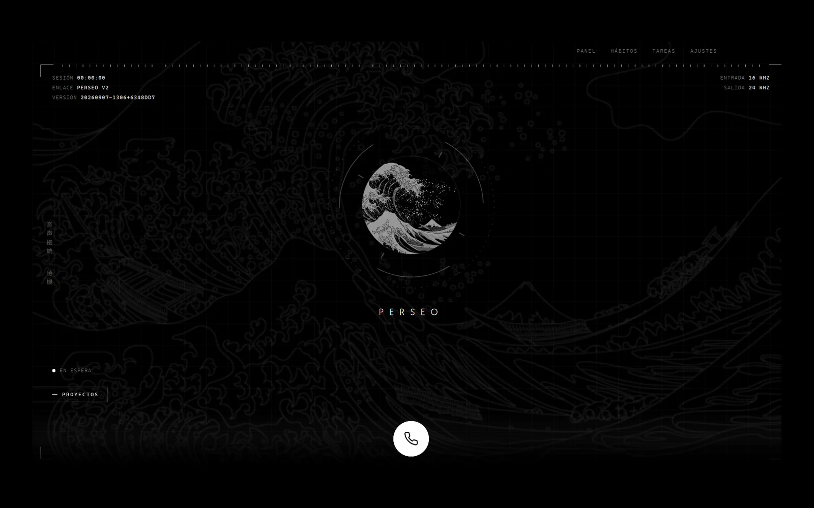

Perseo
Perseo is the longest-running thing I've built. It started as an attempt to have my own AI assistant back when that meant doing it yourself: I trained and tuned it on a machine with 16 GB of RAM, fighting for every gigabyte, leaning on data quality because I had no compute to spare. Getting something that could hold a competent conversation out of that hardware is still one of the results I'm proudest of, precisely because the constraint was absurd.
It was never meant to be a search box with a voice. Perseo was designed to have a personality (empathy, humour, curiosity, opinions about music and books) because I wanted a companion I would actually talk to rather than a command line that answers. That decision has outlived every implementation underneath it.
It is now on its second architecture: an always-on core with a queue, a memory, a policy layer and eight agents, and four faces that don't think: a native voice app on Tauri 2 and Rust, a desktop panel, a phone PWA and a Telegram bot. The rule is that the faces stay dumb, so the core can move to a Raspberry Pi without rewriting anything. The Rust-to-Python bridge runs over pipes rather than a local HTTP server, because a local server is reachable by any process on the machine and one of the tools the core exposes controls the PC.
The core does real work. It reads mail and calendar and triages them with a local model over Ollama, writes memories into my Obsidian vault without ever overwriting, drives the PC through a whitelist, commissions code from sub-agents, and reads and writes my task board while keeping exactly one writer: the core enqueues an order and the window applies it, so there is never a second board to reconcile. Its project rail opens and runs the other projects on this list.
Where it stands: 919 tests green with CI across three languages, in daily use as a research companion while reading and increasingly as a voice-to-markdown front-end for writing, so that drafting a paper section becomes a conversation rather than a typing session. The current codebase came together between April and June 2026 in Beijing and was rebuilt in August.
I still think the personality matters. I keep using it because I like opening it.
- Stack
- Rust, Tauri 2, React, Python, Ollama, Gemini Live API · always-on core + four faces
- Status
- In daily use · 919 tests, CI in three languages
- Year
- 2023–Present
- Code
- Perseo

Next: MAGI